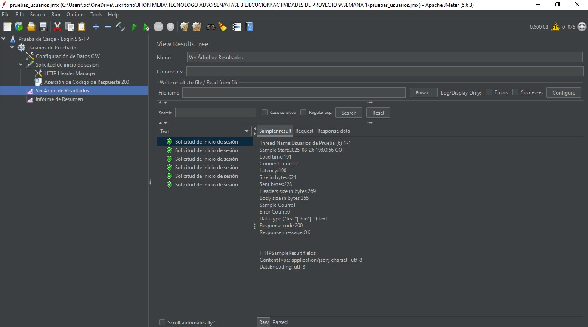

1. Tipos de Pruebas de Software
Las pruebas de software son un proceso vital para garantizar que una aplicación cumpla con sus requisitos y funcione sin errores. Existen diferentes categorías, cada una con un objetivo específico:
Pruebas Funcionales
Verifican que cada función del software opere según las especificaciones. Se enfocan en la lógica de negocio y en las entradas/salidas.
Pruebas de Rendimiento
Miden la velocidad, la capacidad de respuesta y la estabilidad de una aplicación bajo diferentes cargas. Se evalúan métricas como el tiempo de respuesta y la escalabilidad.
Pruebas de Usabilidad
Evalúan qué tan fácil e intuitiva es la interfaz de usuario. Se busca que la navegación sea simple y que el usuario pueda completar sus tareas sin confusión.
Pruebas de Seguridad
Buscan vulnerabilidades en el software para protegerlo de amenazas externas. Se verifican la autenticación, la autorización y la protección de datos sensibles.
2. Pruebas para el Proyecto SIS-FP
Dado que el proyecto SIS-FP es un sistema de gestión portuaria integral, se recomienda un enfoque de pruebas que combine la funcionalidad con la seguridad y el rendimiento. Los tipos de pruebas clave son:
Pruebas de Seguridad
Son cruciales ya que SIS-FP maneja datos sensibles (antecedentes, accesos, etc.). Es vital validar la autenticación JWT y la protección de rutas para prevenir accesos no autorizados.
Pruebas de Integración
La arquitectura cliente-servidor con APIs RESTful exige validar la correcta comunicación entre el frontend y el backend para asegurar que los datos se envíen y reciban sin errores.
Pruebas de Rendimiento
El "Registro de Accesos Centralizado" puede recibir muchas solicitudes simultáneas. Las pruebas de carga garantizan que el sistema responda eficientemente y no colapse en picos de uso.
3. Demostración con Jmeter
Se utilizó Jmeter para realizar una prueba básica de inicio de sesión, validando que el servidor responda correctamente a la solicitud de autenticación.
Resumen de la Prueba de Login
El plan de pruebas en Jmeter se configuró para simular el inicio de sesión de 6 usuarios virtuales de forma concurrente. Se enviaron múltiples peticiones `POST` al endpoint `http://localhost:3000/api/login`, cada una con credenciales únicas de usuarios previamente registrados.
El resultado fue un éxito total: todas las solicitudes obtuvieron un código de respuesta `200 (OK)`. Esto confirma que el servicio de autenticación es robusto y puede manejar eficientemente la carga de múltiples inicios de sesión simultáneos sin presentar fallos.
Capturas de pantalla de las pruebas realizadas con Jmeter.
